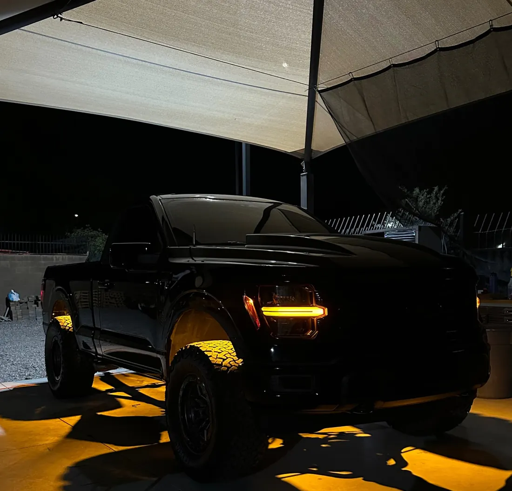
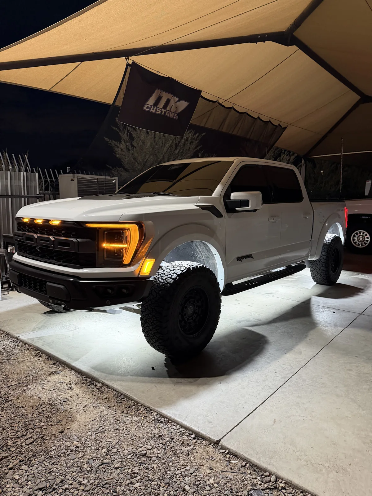
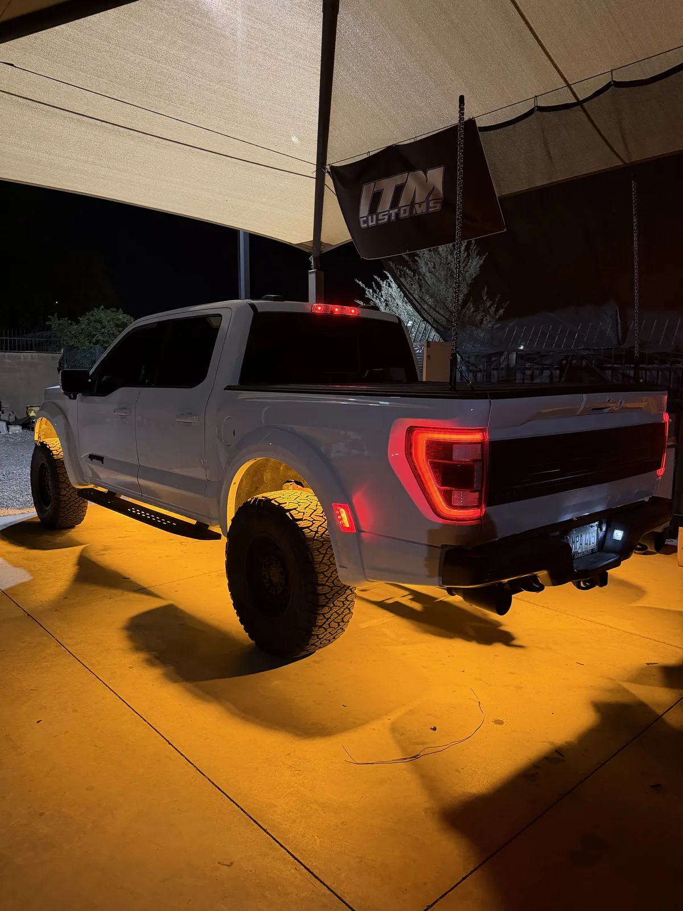

Plug And Play
112-Chip Switchback Rock Light Kit
- 112 LED Chip
- White + Amber
- Bluetooth App
$200 to $700 4 to 20 Lights
Switchback And Amber Rock Lights · Mesa, AZ
Our 112-chip switchback rock light switches between white and amber, with wigwag and strobe modes for when you're parked. It comes in kits of 4 to 20 lights, plug and play with an app, and we install it in Mesa.
5.0★ from 33 reviews · installed in Mesa · kits ship anywhere

A switchback light has two colors in one housing, usually white and amber, and switches between them. On headlights and turn signals, it's the light that runs white and flips to amber. On rock lights, it means one set of lights gives you both looks.
Ours runs solid white, solid amber, wigwag and strobe, with speed and brightness control from the Bluetooth app or the remote.
Every kit is full plug and play with the module, remote and app, it's waterproof, and you pick the count that fits your truck, from 4 lights on a car up to 20 on a crew cab with the bumpers lit.
| Lights | Price | Typical layout |
|---|---|---|
| 4 | $200 | Front wheel wells, or a car |
| 8 | $380 | Two in each wheel well |
| 12 | $500 | Wheel wells, plus 2 on each side |
| 16 | $600 | Wheel wells, plus 4 on each side |
| 20 | $700 | 16, plus the bumpers |
Layouts follow our truck rock light guide. The Raptor in the photos runs 16.
$200 to $700 4 to 20 Lights
Same truck, same lights, two colors. White for a clean glow, amber for the warmer look a lot of truck owners prefer, especially on dark paint.


Amber and white are both allowed facing forward in Arizona, so solid white and solid amber are fine on the road. Wigwag and strobe are flashing modes, and A.R.S. 28-947 only allows flashing lights for emergency vehicles, warning lights on a disabled or parked vehicle, and turn signals. Keep wigwag and strobe for when you're parked.
More on the rules at our underglow page.
| Mode | Driving | Parked |
|---|---|---|
| Solid white | Yes | Yes |
| Solid amber | Yes | Yes |
| Wigwag | No | Yes |
| Strobe | No | Yes |
If you only want white and amber, the switchback is the one, with amber built in as its own color. If you want every color, the RGBW kit mixes red, green and blue, plus a true white. At each count they cost within $5 of each other.
Every light we put on a vehicle gets the same four things. None of them are extras, and none of them depend on who's working that day.
Lights with two colors, usually white and amber, in one housing. Ours switch between solid white and solid amber, plus wigwag and strobe modes.
Our kits are $200 for 4 lights, $380 for 8, $500 for 12, $600 for 16 and $700 for 20.
Solid amber and solid white are allowed facing forward. Wigwag and strobe are flashing modes, so keep them for when you're parked.
Yes. Every kit is waterproof and plug and play with a module, remote and app.
Eight covers the wheel wells. Sixteen gives an even glow down a crew cab. The Raptor in our photos runs 16.
Installs In Mesa
Bring our kit or your own lights. We text you to confirm your drop-off and quote.